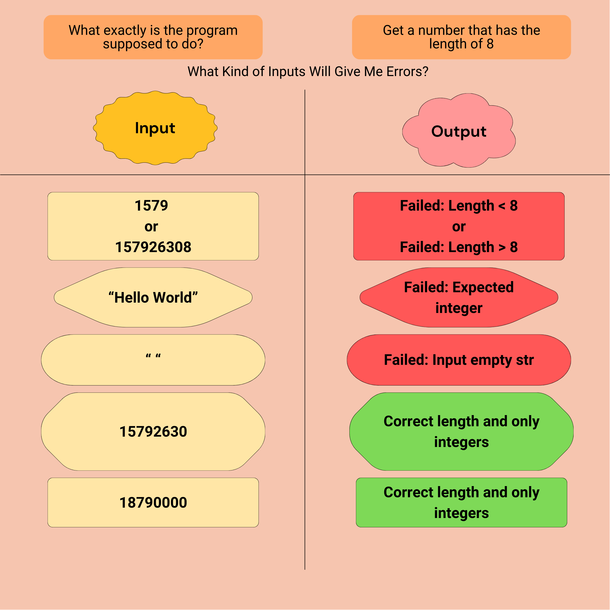
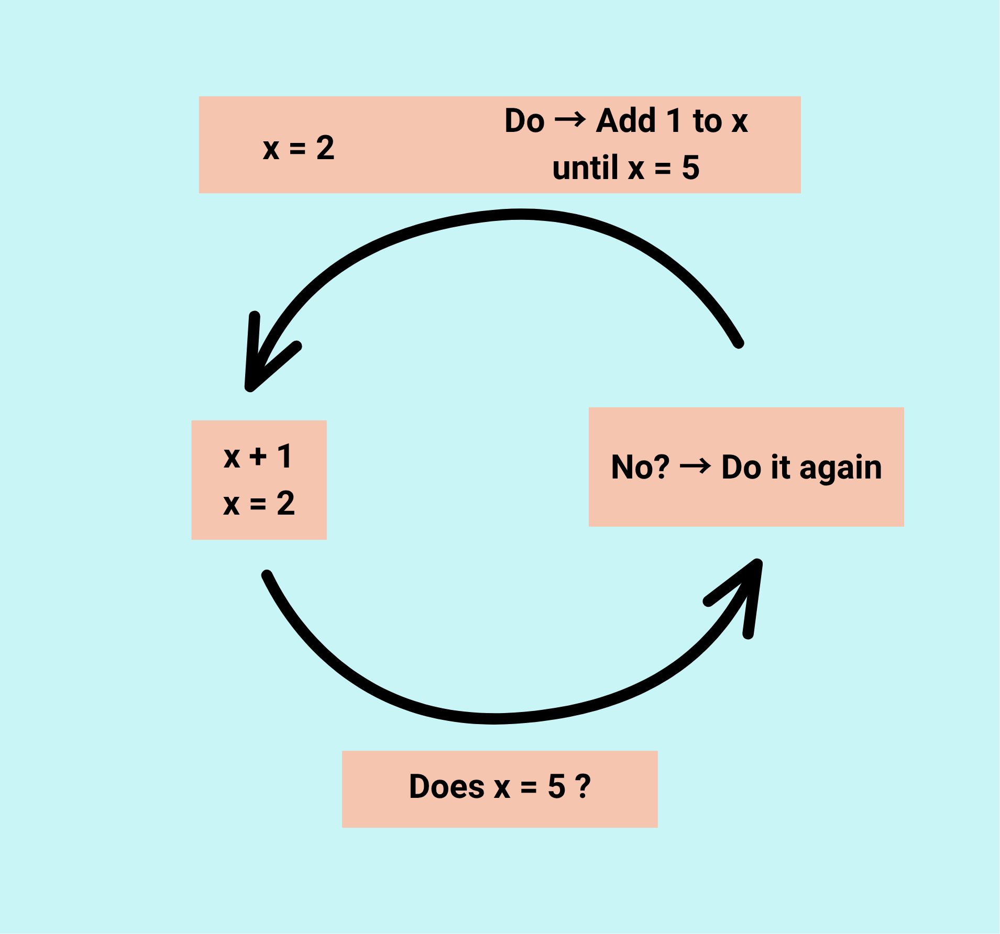
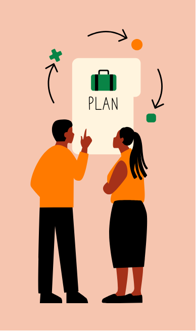

From Design to Solution: Turning a Programming Plan into Code
Before writing a single line of code, there’s a crucial step every programmer learns to appreciate, designing the solution. It’s easy to jump straight into typing, but taking time to think through what the program needs to do, how it will respond to user input, and what could go wrong can save hours of frustration later. In this reflection, I’ll walk through how I approached a recent design assignment and how the planning process guided me from concept to working solution.
Thinking Systematically: Designing Test Cases
The first step was designing my test cases. I approached this systematically by asking a few simple questions: - What exactly is the program supposed to do? - What conditions will fulfill the requirements of the task? - What kinds of inputs might cause errors?
By thinking through these scenarios, I wasn’t just testing my code, I was testing my understanding of the problem itself. Writing clear test cases helped me anticipate how the program should behave before I even began coding. It also helped me identify edge cases, like what would happen if the user entered something unexpected. This step reminded me that planning tests early isn’t extra work, it’s what keeps debugging from becoming overwhelming later on.
Using Loops to Handle Repetitions
As I worked through the logic of the assignment, I realized that certain tasks required repetition. For example, the user might need to input two characters, and if those inputs weren’t valid, the program would have to ask again. That’s a perfect job for a loop — specifically, a do-while loop.
The beauty of a do-while loop is that it ensures the code runs at least once before checking the condition. In this case, the program could prompt the user, check whether the input was valid, and if not, automatically prompt again. Using a loop this way keeps the code efficient, reduces redundancy, and creates a smoother user experience.
Choosing When to Use Switch Statements
Another design decision involved whether to use an *if statement* or a *switch statement*. Both handle decision-making, but switch statements are on several specific values. Instead of writing multiple `if-else` blocks, a switch checks each case neatly and executes the matching one. For my program, I could use a switch statement to handle valid user inputs — for instance, different cases could produce different credit card numbers or responses. Each case would be clearly defined, and adding new ones later would be simple. The key is to remember the `break` statement, which prevents the program from accidentally running into the next case.

Building an Algorithm: Generating a Random Capital Letter
One of the most fun parts of this project was creating an algorithm to generate a random capital letter. I approached it by thinking logically — the English alphabet has 26 letters, so I needed a way to randomly pick one. A loop could handle cycling through the alphabet, and a random function could select a letter’s index. This step taught me how to combine what I already knew (loops and letter ranges) with something new (randomization). It also reminded me that it’s okay not to know every piece right away. Researching how to use a random function or test my output was part of the problem-solving process.
Reflecting on Problem-Solving SkillsReflecting on Problem-Solving Skills
Overall, I’ve found that my problem-solving skills are strong when it comes to planning algorithms step by step. The hardest part is making sure each planned step is specific enough to translate directly into code. My strength is identifying areas I’m unsure about, marking them as “to research later” keeps me moving forward instead of getting stuck. Programming is as much about *thinking* as it is about *typing*. Each challenge is an opportunity to slow down, break the problem apart, and find a path to the answer.
Conclusion: Turning Plans into Practice
Going from design to solution is more than just checking off coding tasks, it’s about learning to think like a programmer. Every test case, loop, and algorithm builds on the same foundation: systematic problem-solving. By taking the time to plan before coding, I’ve learned how to write cleaner, more efficient programs and how to approach challenges with curiosity instead of frustration.